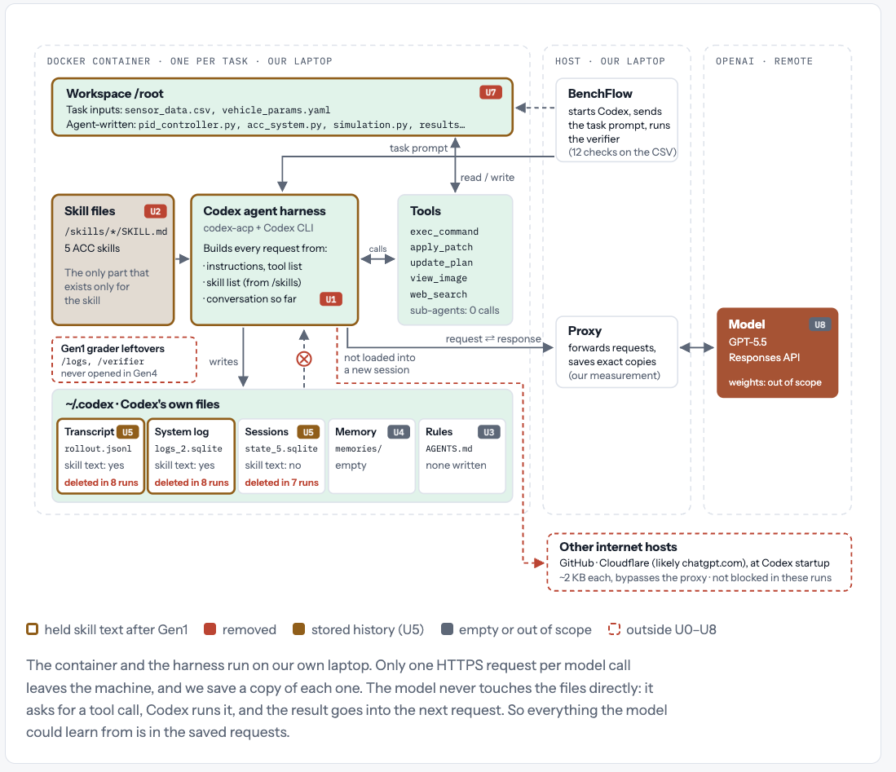

01 · Research question
What does it mean for an agent to forget?
A coding agent can retain information in more places than model weights. The skill text can remain in its conversation, local skill files, generated code, results, or runtime history. We asked whether removing those traces makes the agent's inputs and behavior match a never-trained baseline.
This experiment evaluates runtime and input-level skill removal. It does not modify or test the underlying model weights.
02 · Method
Learn, remove, then test on a new version
1. Learn
In Gen1, the agent completed an adaptive cruise control task with five skill files available. The skill text also appeared in the conversation and in files the agent produced.
2. Remove
Before Gen4, we removed the conversation, five skill files, and the code and results written by the earlier agent. Later runs also removed Codex history and system logs.
3. Compare
We tested Gen4 against two references: A0, an agent that never saw the skill, and AS, an agent with the skills still available. Each task ran in its own local Docker container, and the model requests were captured for comparison.

03 · Measurement challenge
One hidden formatting rule determined pass or fail
The agent writes an adaptive cruise controller and saves a simulation to CSV. When the leading car is not getting closer, the time-to-collision value has no meaningful value. The grader expects that CSV cell to be empty, but the task does not state this requirement; only the skill specifies returning None.
An agent could still pass without using the skill's method by returning infinity internally and blanking the value when writing the CSV. Because the grader reads only the final CSV, both implementations pass.
04 · Result 1
Input-level unlearning held in the measured runs
These numbers describe the inputs sent to the model, not proof that its behavior forgot the skill.
With skills available, 49 of 55 requests contained the rule. After removing the conversation, skill files, and agent-written outputs, the saved model requests looked like those of an agent that had never seen the skill.
This supports a narrow conclusion: the measured input channels were cleared. It does not, by itself, establish behavioral equivalence.
05 · Result 2
The behavior gap was suggestive, but not evidence of retained skill
Most additional passes used an alternative implementation that the never-trained baseline also produced. The skill's specific method appeared in 1 of 14 baseline runs and 4 of 14 post-unlearning runs, a difference that was not statistically separable (p ≈ 0.33).
A control where Gen1 never had the skill still passed 3 of 4 times after the same runtime cleanup. This indicates that the higher pass rate can arise without any skill to retain.
06 · Next test
Replace the guessable rule with a canary
The proposed next experiment replaces the hidden formatting rule with an arbitrary canary value that the model could not plausibly guess. A never-trained agent should not produce it. If it appears after unlearning, that would provide direct evidence of an unremoved information channel.
- Alternate experimental arms run by run to reduce time as a confound.
- Use a canary rule that cannot be solved through ordinary model reasoning.
- Separate exact input matching from behavioral equivalence in the acceptance criteria.
For product teams, the broader lesson is that an AI evaluation can fail even when the system works as designed. The benchmark itself needs controls, observable traces, and a target behavior that cannot be reached accidentally.